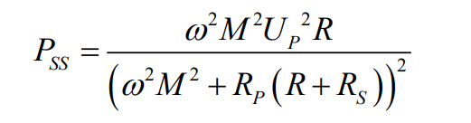

磁耦合谐振式无线电能传输
Magnetically-Coupled Resonant Wireless Power Transfer
July 1, 2023
简介
磁耦合谐振式无线电能传输
项目要求
设计并制作高频逆变器和线圈装置，由两个全桥板和两个LC谐振线圈组成，实现电能的无线传输。
输入电压600V-800V，输出电压400V，输出电流20A，负载R=20Ω（出于安全和设备限制，电流电压容量为10%）
恒压模式： 输入电压600V-800V，输出电压400V±0.4V，调整率为1‰。 输入电压恒定700V，线圈偏移(x,y)为10cm，输出电压400V±0.4V。 负载R=20Ω±50%，输出电压400V±0.4V。
恒流模式： 输入电压600V-800V，输出电流恒定20A±0.2A。 输入电压恒定700V，线圈偏移(x,y)为10cm，输出电流恒定20A±0.2A。 负载R=20Ω±50%，输出电流恒定20A±0.2A。
硬件： H桥（驱动，sicMosfet，吸收缓冲电路，布局布线四层半） 收发端数据用无线模块传输 NRF24L01+2.4G无线发射接模块 直流电压电流采样 外置AD（未拓展）
软件： 移相控制 无线传输
-
要求图
项目完成情况
- 解决了 LC 调谐，SIC 驱动不稳，线圈高压击穿等问题。主要负责系统仿真验证，单板逆变器、外壳研制和调试。
- 实现恒流和恒压输出，电压调整率 3%，负载调整率 1%，3kW 峰值效率 92%；单高频逆变器阻感性负载下可承受 3.5KW。
- 提高了 SIC 器件驱动及较大功率 PCB 设计能力，调试能力，动手能力和系统仿真能力。
debug
LC 调谐
SIC 驱动不稳，开关切换位置
线圈高压击穿
模块变成单板
可改进点总结
散热
死区时间
开关切换位置
双环PI
幅频控制
引言
根据传输软介质和传输原理的差异，可以将无线电能传输（wireless power transmission，WPT）技术划分为微波辐射式、电场耦合式和磁场耦合谐振式 3种 。
微波辐射式主要是用于较大功率进行远距离传输，在干燥大气中传输效率较高。但是，微波能量束散射损耗较大、很难聚集、定向性不好。因此，微波的传输过程对于方向性要求很高，发射装置与接收装置必须对准，从而需要高精度的实时追踪定位设备，才能保证较高效率的电能传输。此外，微波辐射式传输会产生一定的辐射，危害人类健康以及其他生物。因此微波辐射式电能传输很少在民用领域使用，仅在一些特殊领域使用，例如：太阳能电站、侦探卫星、微波飞机等。
感应耦合式（Inductive Coupled Power Transfer,ICPT）是利用松耦合变压器或者可分离变压器，通过电磁感应原理完成电能传输。不仅传输功率较大，而且传输效率极高。当松耦合变压器耦合程度很高时，无线传输效率能够超过 95%。但是，无线传输距离很短，通常是几毫米到几厘米。当无线传输距离增加时，无线传输效率将急剧下降。因为受到传输距离的限制，所以感应耦合式电能传输很难广泛应用
相比于其它两种无线电能传输技术，磁场耦合谐振式无线电能传输技术不仅可以避免电磁感应式传输距离近的问题，而且可以避免电磁波辐射式危害其他生物安全与效率低的问题。具有定向性能较好、辐射较小、传输距离较远、传输功率较大、传输效率较高等特点。
控制方案
移相控制。
移相全桥变换器的开关管可以实现零电压（zero voltage switch，ZVS）开关，因而开关损耗较小，有利于开关管的高频化，并且可以减小变压器的体积，提高其功率密度。但是，在轻载或者负载变化较大的情况下，全桥变换器的滞后桥臂 ZVS 开关的范围较小，这会导致开关管的损耗增加。若开关管的工作频率较高，则系统效率会大幅度降低。并且开关管导通瞬间会产生非常大的电流变化率，这会带来较大的电磁干扰，使得系统的性能降低。由于 WPT 存在着较大的气隙，会在功率回路中产生较大的漏感，常通过加入谐振补偿网络，利用谐振效应减少原边电流。
在该移相全桥闭环控制设计中，只采用电压单环比例 - 积分（proportional integral，PI）控制，这虽然可以使 PI 控制设计简化，但是这种控制方法的响应速度不快 。 **可改进点：**为了提高系统的响应速度，**还需在电压闭环控制的基础上引入电流环，采用电压、电流双闭环控制。**该方式下电压外环以负载输出电压作为控制器的输入量，将负载电压与给定电压相比较，得到输出的误差变量，然后通过 PI 调节器得到峰值电流的控制量。电流内环以负载输出电流作为控制器的输入量，将负载电流与峰值电流的控制量相比较，得到输出的误差变量，然后通过 PI 调节器控制变换器的移相角。移相全桥变换器通过引入电流内环，可以提高系统的动态响应速度，实现限流与过流保护，因而能提高系统的响应速度。
移相控制**基本原理：**如下图所示，由 S1 和 S3 组合为超前桥臂，由 S2 和 S4 组合为滞后桥臂。上下桥臂的两个开关管之间 180°互补导通，但是在现实工况中，需要设置一定的死区时间，以防止上下桥臂出现短路现象。同时，S1 与 S3 分别超前 S4 与 S2 一个相位，这个相位定义为移相角。可以通过控制移相角的大小控制桥臂电压大小，进而控制输出电压的大小。
基本原理与拓扑结构
MC-WPT 系统是一种松耦合线圈隔离电源，与一般变压器隔离电源的不同之处在于其两个线圈之间没有磁芯相连，所以原副边线圈之间的耦合系数很低。与一般变压器隔离电源相比，其控制方法和系统结构都更加复杂。
拓扑如图所示，磁耦合谐振式变压器将 WPT 系统分为两大部分：发送端（一次侧）与接收端（二次侧）。发送端主要包括高频逆变器、一次侧补偿电容和磁耦合变压器一次侧。接收端主要包括磁耦合变压器二次侧、二次侧补偿电容、全桥整流电路和负载。其能量来源于直流源，通过高频逆变器将调节后的直流电逆变成高频交流电。高频交流电在电磁耦合机构的能量发射线圈上激发高频交变磁场，能量以高频交变磁场的形式向空间传递。然后能量拾取线圈从空间高频交变磁场中拾取电能，以高频交流电的形式传向次级变换电路。次级变换电路将高频交流电整流变为直流电输出。
这种拓扑结构有以下 3 个优点： 1）输入与输出之间通过磁耦合变压器，实现了电气隔离与物理隔离，从而可以减少一次侧与二次侧 之间的相互干扰； 2）功率密度和电压利用率较高，同时开关管承受的电压、电流阀值较小； 3）利用磁耦合变压器的漏感、开关管寄生二极管和电容共同实现开关管的 ZVS 开关。
可改进点：为了进一步提高无线电能传输的多样性和效率，可以采用双主动拓扑结构实现能量的双向流动，
磁耦合机构及谐振补偿拓扑
MC-WPT 技术原副边线圈之间耦合系数很低，通过交流阻抗法将副边阻抗反射到原边之后逆变器输出仍然呈阻感性，直接使用必定会增大系统的无功功率，增加系统损耗，而且系统的传输功率也要取决于反射后的阻抗大小，较大的阻感性负载阻碍了功率的传输。针对这种情况，通常采用谐振补偿的方式来减小系统阻抗，从而降低系统对输入电压或电流的要求，同时也为逆变器软开关的实现提供了条件。
谐振补偿拓扑结构可以根据其复杂程度分为基本补偿拓扑和混合补偿拓扑，其作为 MC-WPT 系统中高频逆变电路的负载，不同特性的谐振补偿需要不同高频逆变电路来驱动。其中四种最常见的基本谐振补偿拓扑如图所示。
基本谐振补偿拓扑结构
图中 Lp-原边线圈自感，Cp-原边谐振补偿电容，Rp-原边线圈等效串联电阻，Ls-副边线圈自感，Cs-副边谐振补偿电容，Rs-副边线圈等效串联电阻，R -等效负载电阻值。
通过建立原副边线圈的T 型等效模型，然后根据交流阻抗分析法可以得到四种基本谐振补偿拓扑的总阻抗为：
其中，Zr 表示副边到原边的反射阻抗，用交流阻抗分析法表示为：
当副边谐振频率和系统工作频率 ω 相等时，即：
由上两式可得

由此可见，当副边为并联谐振补偿结构时，其反射阻抗 Zr 含有虚部，即不是纯阻性。在这种情况下负载和互感的变化都会引起原边谐振频率变化，影响系统正常工作，所以只适用于定负载、定互感的 MC-WPT 系统。而当副边为串联谐振补偿结构时，其反射到原边的阻抗为纯实数，即纯阻性，理想情况下负载和互感的变化都不会影响系统谐振频率，适用于本设计要求，也适用于像电动汽车无线充电系统这种互感和负载均会发生变化的系统。
对于原边线圈，如果采用并联谐振补偿结构，则需要采用电流型逆变驱动谐振补偿。而电流型逆变需要在逆变输入侧串联一个直流大电感（直流大电感可以抑制电流脉动，近似为直流电流源），这不仅会增加系统成本和体积，还会增加系统损耗。同时，电流型全桥逆变存在环流问题，环流会使谐振电容两端的电压发生畸变，产生电磁干扰，增大开关管的开关损耗，影响系统的稳定运行，尤其在大功率场合并不适用。进而出现LCL型、LCC型等混合补偿拓扑。
本设计采用基本型SS 型谐振补偿拓扑，通常只存在一个软开关工作点，只有在重载时才会出现多软开关工作点。这种谐振补偿拓扑需要采用电压型逆变驱动，在 MC-WPT系统中，电压型全桥逆变是应用最为广泛的逆变器，适用于大功率应用场合，如电动汽车无线充电。
电压型全桥逆变器
SS 型谐振补偿和电压型全桥逆变组合，称为串联谐振全桥逆变，其拓扑如图所示，
串联谐振全桥逆变拓扑结构
由于电压型全桥逆变输入侧直流电压源的钳位作用，其输出为交流矩形波电压，且与负载阻抗特性无关，而输出电流波形和相位与负载阻抗特性密切相关。在接入理想的 SS 型谐振补偿电路后，且逆变器工作频率等于系统固有谐振频率，电压型全桥逆变的输出电压、电流波形同相位，电流呈正弦波。其输出电压、电流波形如图所示。
逆变输出电压电流波形
由于直流电源的电压钳位作用，逆变输入电压 Ud将保持幅值不变，那么忽略开关管上的压降，逆变输出电压 Up的幅值也等于 Ud。如果将方波电压接在纯电阻负载两端，那么电流也为同相同频的方波，电压、电流有效值均等于幅值。在串联谐振全桥逆变中，谐振补偿电路的输入阻抗表达式中不含虚数（即为纯阻性），逆变输出电流波形却为正弦波。因为对谐振耦合机构采用的是交流阻抗法进行分析，其默认的输入电压源是交流正弦波，所以需要将方波电压进行傅里叶展开，计算各次谐波分量后再在时域下根据叠加原理求解，对这种高阶系统只取其基波分量进行近似计算。所以串联谐振全桥逆变输出电压的有效值 Up应该等于其基波分量的有效值，即：
互感和负载电阻影响
当无线发生谐振时，无线的输出功率与传输效率的方程如下
输出功率和传输效率与以下因素有关：角频率ω、内阻 R1和 R2、负载 RL、互感系数 M。
由于本系统的线圈大小与开关频率都是固定值，因此可以忽略线圈内阻和角频率的影响，只考虑互感和负载电阻的影响。
- 负载电阻影响：通过对负载求导，可以推导出无线系统在谐振状态最大输出功率和传输效率所需负载大小。

最大输出功率负载
最大传输效率负载
- 互感对频率的影响：
如果副边采用串联谐振补偿方式，且副边谐振频率与系统工作频率相等时，其反射阻抗为纯实数。在这种理想情况下，互感的变化仅仅表现为系统传输功率变化，系统工作频率并不会受到影响。但是，在实际应用中，由于器件自身误差和仪器测量误差的存在，谐振电容的值会存在一定误差。所以，原副边参数误差使原副边谐振频率并不相同，在浮频控制下，系统工作频率将偏离设计频率。反射阻抗 Zr 表示为：
对于 SS 型或 LCC-S 型谐振补偿拓扑，设系统设计频率为 ωo，如果 ω ≠ ωs ≠ ωo，则反射阻抗 Zr 将存在虚部。设原边谐振补偿电路的固有谐振频率为 ωp，当采用浮频控制时，反射阻抗 Zr 将使系统工作频率偏离原边谐振补偿电路的固有谐振频率。所以在实际系统中，副边即使是串联谐振补偿结构，器件参数误差和计算误差也会使原副边补偿网络固有谐振频率均偏离设计频率
副边反射到原边阻抗的实部和虚部大小均与互感M有关，即反射阻抗中的电抗也会随互感大小的变化而变化，所以，互感大小的变化会引起系统工作频率变化。有一种用于计算软开关工作点的频闪映射不动点方法，这种方法通过建立系统的分段线性化状态空间模型，然后实现对谐振周期的精确计算。由于本设计采用定频控制，在此不做分析，参考文献[唐春森. 非接触电能传输系统软开关工作点研究及应用[D]. 重庆大学, 2009.]
- 互感对功率的影响：
对于 SS 型和 LCC-S 型谐振补偿拓扑，互感变化直接影响反射阻抗大小，从而影响系统原边等效阻抗的大小，进而影响系统传输功率，如果忽略电感 L1 的内阻 R1，其他参数不变，则其输出功率 随互感增大单调递增。对于 SS 型谐振补偿拓扑，其输出功率 PSS 表示为：

如果忽略原副边线圈内阻 RP 和 RS，其他参数不变，则其输出功率随互感增大单调递减。但是实际应用中，线圈内阻不可忽略，在逆变输出电压 UP、系统工作频率 ω 和负载 R 均不变的条件下，两种拓扑输出功率随互感变化曲线如图所示。
输出功率随互感变化曲线
对于 SS 型谐振补偿拓扑，随着互感减小，反射阻抗也减小，原边线圈电流 IP 增大，原边线圈内阻 RP 上的功率损耗不断增大，当反射阻抗减小到等于原边线圈内阻时输出功率达到峰值。
在实际系统中，系统互感和输出功率关系曲线通常保持在上图所示的虚线方框区域内，不会出现互感过大或过小的情况。
为了计算方便，假设系统处于完全谐振的状态，可以表示出 SS 型和 LCC-S型谐振补偿拓扑的输入阻抗 Zp为：
则逆变输出电流可以表示为：
将上式带入由于之前得到的

化简Up可以得到
如今的电动汽车通常采用锂电池来存储电能，充电一般分为两个阶段，即恒流充电和恒压充电。且各个阶段各自的输出功率波动都不大，假设各个阶段各自输出功率恒定。由上式可知，如果系统其它参数固定，在互感 M 变化的情况下，要保持输出功率恒定不变，就要改变逆变电流的大小。所以，在互感变化的情况下，如果通过初级变换电路中的功率调节电路来实现系统恒功率输出控制，不仅改变了逆变输出电压的大小还改变了逆变输出电流的大小，所以互感变化会引起逆变输出电压、电流变化。
开关管开关过程
在本设计中，其自身谐振网络可以为高频逆变电路中的开关管辅助换流，所以不需要额外增加电感和电容器件就能够实现软开关。如逆变器拓扑上图所示的串联谐振全桥逆变输出电压、电流波形是理想波形，电压和电流相位完全相同，呈纯阻性。实际系统中，开关管的导通和关断都需要时间，所以电压型全桥逆变驱动需要设置死区，因此逆变输出电压换向也需要时间。为了实现开关管软开关，就不能保证逆变输出呈纯阻性，而要使逆变输出呈弱感性，这样才有利于开关管换流，实现零电压开通（ZVS）。电压型全桥逆变（串联谐振全桥逆变）软开关驱动、开关管漏源极电压及逆变输出电压、电流波形示意图如图所示。
串联谐振全桥逆变软开关示意图
- VGS1/4 - S1 和 S4 栅源极两端电压
- VGS2/3 - S2 和 S3 栅源极两端电压
- VDS1/4 - S1 和S4 漏源极两端电压
- VDS2/3 - S2 和 S3 漏源极两端电压
- IS1/4 - 开关管 S1 和 S4 的电流
- IS2/3 - S2 和 S3 的电流
- UP和 IP - 逆变输出电压和电流。
开关过程分析
在零时刻， S1 和 S4 处于导通状态，其漏源极两端电压为零， S2 和 S3 漏源极两端电压等于逆变输入电压，逆变输出电压和电流均为正。然后关闭 S1 和 S4 的驱动，经过一段时间延时到达 t1 时刻，开关管 S1 和 S4 驱动电压下降到关断阈值，其漏源极两端电压开始上升，开关管S2 和 S3 漏源极两端电压开始下降，逆变输出电压也开始由正缓慢变化到负。开关管 S1 和 S4 的关断过程中存在电压电流的叠加区域，所以是硬关断。
到 t2 时刻， S1 和 S4 漏源极两端电压降为零， S2 和 S3 漏源极两端电压上升到逆变输入电压，逆变输出电压也变为负的逆变输入电压。**此时逆变电流还没有过零换向，所以逆变电流将导通 S2 和 S3 的反并联体二极管为其续流，S2和 S3 漏源极两端电压被钳位在零电压。**这时导通 S2 和 S3，在整个导通过程中，**其两端电压为零，而电流不为零，所以为零电压开通（ZVS）。**t3 时刻到t4 时刻，可以同样分析， S2 和 S3 的关断为硬关断， S1 和 S4 的导通为零电压开通（ZVS）。
本设计采用定频控制，由于系统频率会因为各种原因，不可能刚好在逆变器工作频率无法实现较好的软开关效果。
浮频控制
本设计虽使用定频控制，但对浮频控制做介绍，可解决调谐过程中遇到的问题
采用各种浮频控制的方法实现逆变器工作频率对系统谐振频率的跟随，在电流过零处进行驱动切换，这样的控制方法只是在流过开关管电流很小的时候进行切换，并不一定能够实现较好的软开关效果。开关管导通或关断的整个过程中，其两端电压和流过它的电流仍然可能存在叠加区域，即存在开关损耗和开关噪声。所以，电压型全桥逆变软开关控制不仅需要频率跟随，还要保证逆变输出呈弱感性。（可改进点）
浮频控制原理框
由于采样电路和控制器会造成一定时间的信号延迟，反馈控制中加入相位补偿电路来补偿信号延迟时间，同时使逆变输出呈若感性。最常用的相位补偿电路是由电阻电容组成的无源高通滤波器，其输出正弦信号的相位超前于输入正弦信号，RC 相位补偿电路原理图及其输入输出电压波形图如图所示。
驱动位置切换
相位补偿电路的补偿角度和补偿时间不仅与补偿电路参数有关，还与输入信号的频率有关。未调谐时可能会出现以下几种情况：
（a）最佳切换
S1、S4 处于导通时，逆变输出电压 UP 和输出电流 IP 为正。t1 时刻开关管 S1、S4 的驱动关闭，此时电流 IP 还未过零换向，开关管 S2、S3 反并联体二极管将被导通为 IP续流，逆变输出电压 UP 随之换向，开关管 S2、S3 漏源极两端电压被反并联体二极管钳位到零（忽略反并联体二极管导通压降）。t2 时刻导通开关管 S2、S3，即为零电压开通（ZVS），电流 IP 也随之过零换向。
（b）过早切换
与（a）类似也能实现零电压开通（ZVS），但是驱动切换时间过早，硬关断时刻流过开关管的电流会更大，损耗也更大。驱动切换时间过早还会造成电源向电磁耦合机构注入能量的时间变短，降低系统传输功率。
（c）过晚切换
t1 时刻 S1、S4 的驱动关闭，电流 IP 过零换向前电压UP 先换向。t2 时刻电流过零换向，而此时 S2、S3 还未导通，所示电流 IP将导通 S1、S4 的反并联体二极管为其续流，电流 IP 换向后电压 UP 随之换向。到 t3 时刻 S2、S3 两端电压为电源电压，此时导通 S2、S3，在导通期间将会有电流流过 S2、S3，所以为硬开关，开关管导通后电压 UP再次换向。
（d）过晚切换
此情况驱动切换位置更晚，t1 时刻电流 IP 过零换向，此时S1、S4 还处于导通状态，所以 S1、S4 成为电流 IP 的换向通路。t2 时刻 S1、S4 关断，在开关管 S1、S4 沟道被关闭的同时，其反并联体二极管将被导通为 IP续流，在开关管 S1、S4 关断的过程中，其两端电压始终为零，所以为零电压关断（ZVS）。t3 时刻导通开关管 S2、S3，电压 UP 换向。这种情况虽然也能实现软开关，但是在导通开关管 S2、S3 时，开关管 S1、S4 的反并联体二极管会出现反向截止电流冲击。
综上分析，（a）所示的驱动切换位置是最好的，而受系统频率变化的影响，驱动切换位置会发生变化，进而影响软开关效果，所以实现驱动切换位置的反馈控制，能在频率变化的情况下保证驱动在较好位置切换是很有必要的。
驱动死区
死区时间防止桥臂直通，开关管的开关延迟主要由其自身寄生电容造成，死区时间设计尤为重要。

- IP 表示逆变输出电流
- C1、C2、C3、C4 - S1、S2、S3、S4 的漏源极寄生电容
- VC1、VC2、VC3、VC4 - S1、S2、S3、S4 漏源极寄生电容两端电压
- VD1、VD2、VD3、VD4 - 开关管的反并联体二极管
- VGS1/4 和 VGS2/3 - S1/S4 和 S2/S3 栅源极两端电压，栅源极寄生电容和驱动电阻使得上升沿和下降沿变得平缓，这将导致一部分开关时间延迟；
t1 时刻，S1/S4 驱动由高电平变为低电平，由于开关管栅源极间寄生电容和驱动电阻的存在，栅源极间电压 VGS1/4 不会突变为低电平，其下降沿变得平缓。
t2 时刻，VGS1/4 下降到开关管的关断阈值，由于逆变输出电流 IP 还没有过零换向，且开关管 S2/S3 漏源极间寄生电容上电压 VC2和 VC3为Ud，此时电容 C2/C3 开始放电，C1/C4 开始充电，经过关断过程后，开关管 S1/S4完全关断。
在 t3 时刻 S2/S3 驱动由低电平变为高电平，同样由于S2/S3 栅源极间寄生电容和驱动电阻的存在，VGS2/3 缓慢上升。到达 t4 时刻，C1/C4充电到 Ud，C2/C3 完全放电，VGS2/3 上升到开关管的导通阈值，开关管 S2/S3 导通。
驱动死区时间是td=t3-t1。当 C1/C4 充电到 Ud，C2/C3 完全放电时，VGS2/3 上升到开关管的导通阈值，是最好的开关切换位置和死区。
系统参数固定后，电容充放电时间的关系式为（IC 表示电容电流）：
系统的传输功率会在充电过程中发生变化，从而引起 UP和 IP 发生变化，而由上式可知，UP 和 IP 的变化导致充放电时间发生变化，从而驱动死区时间会发生变化。
保证驱动较好切换位置的前提下：
如果死区时间太长，开关管关断将更早，此时流过开关管的电流更大，所以会造成更大的开关损耗。同时，逆变输入电源向谐振耦合机构注入能量的时间将更短，系统传输功率将更小。
如果死区时间太短，一是有可能引起全桥逆变同一桥臂直通，二是造成开关管不能零电压开通（ZVS），形成米勒平台。所以实现驱动死区时间动态调整才能保证软开关有更好的效果。
主要电路模块及参数设计
- DSP核心板
- 主电路
- 采样模块
- 驱动模块
- 辅助电源模块
- 散热模块
开关管和驱动
开关管
本设计主电路开关管选用科锐公司生产的 SiC MOSFET，型号是C2M0080120D，最大电压应力 1200V，最大电流应力 36A（25℃），Rds(on)为80mΩ，开关速度小几十纳秒，门极电荷62nC。
驱动电源
通常导通电阻 Rds(on)越小，导通损耗越小。考虑到 Vgs最大额定值是 25V，同时较低的门极电压会使得导通电阻 Rds(on)增加，因此本设计选用 20V 正偏电压的栅极驱动来降低Rds(on)，从而减少导通损耗。在关断时采用负偏压，这样可以从门极汲取更多的电流，使得开关管快速、可靠关断，同时也能大幅降低关断损耗。
本设计中采用金升阳公司的 QA01C 电源模块+20V/-4V驱动SiC MOSFET，该电源模块的电压输入范围 13.5V-16.5V。当输出电压为 20V 时，输出电流为 100mA；当输出电压为-4V 时，输出电流为 -100mA。交流隔离电压为 3.5KV，直流隔离电压为 6KV。不仅具有可持续短路保护，同时转换效率高达 83%。隔离模块的外围电路如下图。
此外，开通时为缩短电压上升时间一般会降低栅极电阻，通常采取慢开快关。
栅极电阻
本设计中开通栅极电阻选用10Ω，关断栅极电阻选用3.3Ω。实际电路通过微调Rds(on)达到最好的效果。小的Rds(on)可以减小开关损耗，但可能引起较大的电压尖峰、电路振荡和电磁兼容的问题。大的Rds(on)，可以缓解电压尖峰、电路振荡和电磁兼容的问题，但会增加开通损耗，甚至会有寄生导通的风险。
驱动芯片
本设计使用主控为TMS320F28335 ，由于其输出电压为 3.3 V 左右，这一电压值与开关管的驱动电压值不匹配，因而通常需要设计驱动电路以使其兼容。驱动电路的主要作用是放大 DSP（digital signal processing）的控制信号，通过对控制电路与主电路进行电气隔离，以提高系统的抗干扰能力。因此，驱动电路的设计直接影响着系统开关速度。
在全桥电路设计中，由于电压等级较高，需要进行隔离保证信号部分的安全。因此在本设计中驱动电路中的芯片采用1EDI60N12AF，它是由英飞凌公司制造的一种电流隔离的单沟道MOSFET驱动器，PG-DSO-8-51封装在分离的输出引脚处提供至少6A的输出电流，轨至轨峰值电流输出10A，隔离电压高达1.2kV，宽电压输入(3V-15V)，独立源和汇输出。分离的轨对轨驱动器输出简化了栅极电阻器的选择，节省了外部大电流旁路二极管，并增强了dV/dt控制。此外，还具备输入与输出欠压锁定功能，只有当输入与输出的电压都同时达到其门槛电压才能驱动开关管。
主电路
输入电容
电解电容器选用470uF/450V串并联增加耐压，泄放电阻并联均压。
主电路
GS间电容调节开通关断速度，RC吸收电路位置预留。
为增加散热和通电流能力，主电路走线开窗，可在上面加锡或者增加铜棒。
采样设计
电压采样
霍尔电压互感器TBV5/25A 南京托肯电子
原副边2.5kV绝缘电压，可用于测量直流、交流和脉冲电压
额定输入电流5mA，输出电流精度±0.5%，功耗电流＞20mA，响应时间40us
零点失调电流±0.2mA，失调电流温漂±0.5mA，线性度<0.2%FS。
调理电路
调理电路如下图所示
使用时原边电阻选择尽量使其工作在额定状态，测量值最准确。
原边电阻功率P>(VCC*VCC/4R)/4，取双倍以上
R37为测量电阻100Ω，将电流量转化为电压量
Iout=N*VCC/4R
Uout=Iout*R37（Iout即O/P端子输出，匝比N=5000:1000）
例：VCC=700V ，Uout=700/120k5100=2.91V
电流采样
霍尔电流传感器CSM050LA 南京茶花
原副边2.5kV绝缘电压，可用于测量直流、交流和脉冲以及各种不规则波形的电流
额定输入电流50A，电流测量范围0~75A，额定输出电流50mA，功耗电流＞20mA，响应时间<40us
零点失调电流±0.15mA，失调电流温漂±0.5mA，输出电流精度±0.5%线性度<0.2%FS，频带宽度DC~100khz
调理电路
调理电路如下图所示
R48为测量电阻160Ω，将电流量转化为电压量
Iout=Iin/N
Uout=Iout*R48（Iout即M端子输出，匝比N=1000:1）
例：Iin=20A，Uout=20/1000*160=3.2V
电压跟随器
缓冲作用：相当于一个恒定电压源，在设计范围内，无论后级接的电路如何变化，输出电压恒定不变化，能保持前级的放大倍数或者其他性能不变，否则如果前一级的输出阻抗较大，后一级的输入阻抗较小的话，信号肯定会失真。
隔离作用：电压跟随器的输入阻抗很大，近似的认为开路（对前级电路），前级电路就不会影响到后级电路，但是电压的形状传输过去了，但是前级的电流却没有传输过去。
R47 R46 R45 起限流作用，运放都有输入和输出电流限制，最大就几十mA，太大会损坏运放。
在运放负反馈增加电阻R50
信号源内阻较大时，添加阻值与信号源内阻相同的反馈电阻，平衡输入偏置电流带来得影响，可以减少输出失调电压，提高跟随精度。
但是反馈电阻值越大，闭环放大器越不稳定，这是因为这个电阻与放大器的输入电容形成了一个极点，闭环以后就成了系统的零点，如果这个 零点频率太低（RF取值太大），落到了放大器带内，调板子的时候就等着惊喜吧 一般增益带宽积越大的运放，对这个电阻的取值也越敏感。
结构和接法
- 测量小于25A的电流时，可以用多线圈，以便应小于额定输入电流 PN得到最好的精度，但考虑到散热问题，传感器的长期工作电流应小于额定输入电流
- 线圈完全充满初级穿孔时动态特性最佳
霍尔效应原理
霍尔效应是由带电粒子（如电子）相应电场和磁场的相互作用引起的。如下图所示
当导电板连接到带有电池的电路时，电流开始流动。电荷载体将沿着从板的一端到另一端的线性路径。电荷载流子的运动导致磁场的产生。当磁体靠近板放置时，电荷载流子的磁场会发生畸变。这扰乱了电荷载流子的直线流动。扰乱电荷载流子流动方向的力称为洛伦兹力。由于电荷载流子磁场的畸变，带负电的电子将偏转到板的一侧，而带正电的空穴将偏转到板的另一侧。在板的两侧之间会产生一个电位差，称为霍尔电压，可以用仪表测量。
辅助电源
需求分析
- 数字
DSP（+5V）
驱动芯片（+5V）
- 模拟
采样（±15V）
- 功率
驱动电源（+15V）
器件选择
辅助电源全部采用金升阳的隔离模块，均输入防反接保护，输出短路、过流、过压保护。通过两级级联为三大部分供电。根据官方数据手册所提供的应用电路搭建外围电路，由于没有EMC设计要求，所以未加入EMI滤波模块。
- PV15-27B15R3 15V给驱动电源以及后级电源模块供电
PV15-27B15R3
100-1000VDC转15V/1A 效率典型值81%，最大容性负载1200uF，纹波&噪声小于200mV，调整率/电压精度小于1%。TVS 管SMBJ20A在模块异常时保护后级电路，输入接保险丝2A/1000V
- URA2415LD-30WR3 ±15V给采样模块供电
9-36VDC转15V/1A 最大容性负载680uF 调整率/电压精度小于1.5% 纹波&噪声小于150mV
URA_LD-30WR3
- URA2405LD-30WR3 +5V给驱动芯片和DSP供电
9-36VDC转5V/3A 最大容性负载2000uF 调整率/电压精度小于1.5% 纹波&噪声小于150mV
原理图如下图所示：
PS:
- 辅助电源模块从直流侧取点，PV15-27B15R3欠压保护点在60V-85V，低电压调试时，请移除保险丝，通过直流源单独给辅助电源供电（+15V），接入点为PV15-27B15R3的输出引脚。
- 若不适用此辅助电源模块，也有预留接口通过外部供电。
- 辅助电源前后级相连电容无需安装：C45,C52,C53,C58。
DSP最小系统板
本设计采用零零电子TMS320F28335核心板，六层沉金工艺，可直接插入板上排母，若不使用此核心板，板上接口均有预留（采样，PWM，辅助辅助电源等）
Layout
驱动
驱动电源输出并联的100uF电容器应靠近驱动芯片引脚，提供电流。
高压侧和低压侧应保持足够地距离 PCB的两个相邻高侧隔离部分之间应保持相同的最小距离，以增加有效隔离并减少寄生耦合
gnd要求每个接地平面为100 mm²，以实现最大功率耗散
为了确保低电源纹波和干净的开关信号，旁路电容器迹线长度应尽可能短
采样
- 流经原则：电容应该放置在电源进线的途中，电源先经过电容组，再进入电源管脚。常见的错误是，电容被放置在电源走线的分叉上。
- 顺序原则：电源走线应先经过 CI 大电容，再经过 C2小电容
- 就近原则：C2 小电容应该无限靠近芯片电源脚根部，而 C1 也尽量靠近 C2。也有将一个 C1 设计到电源入端，而将多个 C2 设计到各自的电源根部。图 4-5 是一个放大器电源电容配置的布线图，左边图是标准的值得借鉴的，右边的很差劲。
- 共地原则：一个电容组的两个电容，其接地点必须是一个相同的地平面区域，而不要使用靠过孔相连的两个地区域。
正确实例

错误示例
- 电源走线应该足够的粗，不要因为个别地方很窄，就整体将电源线变细。
- 不要节省电容，不要让其它电路干涉电源旁路电容的布局。
- 注意电解电容的极性和耐压问题。钽电容耐压不够，很容易烧毁。
- 根据噪声分布不同，可能要考虑更换电容值。但大电容在 luF~l0uF 内，小电容在0.01uF~0.1nF 内，是最为常见的搭配。
参考文献
移相全桥磁耦合谐振无线直流变换器的设计_刘贤
磁耦合谐振式无线双向车载变换器设计_刘贤
电动汽车无线充电系统电压型全桥逆变软开关控制方法_周鸿年
- Posted on:
- July 1, 2023
- Length:
- 4 minute read, 673 words
- Tags:
- hustle-site
- See Also:
- 单相交流电子负载
- 基于UCC28019的高功率因素电源
- 智能小车电源模块